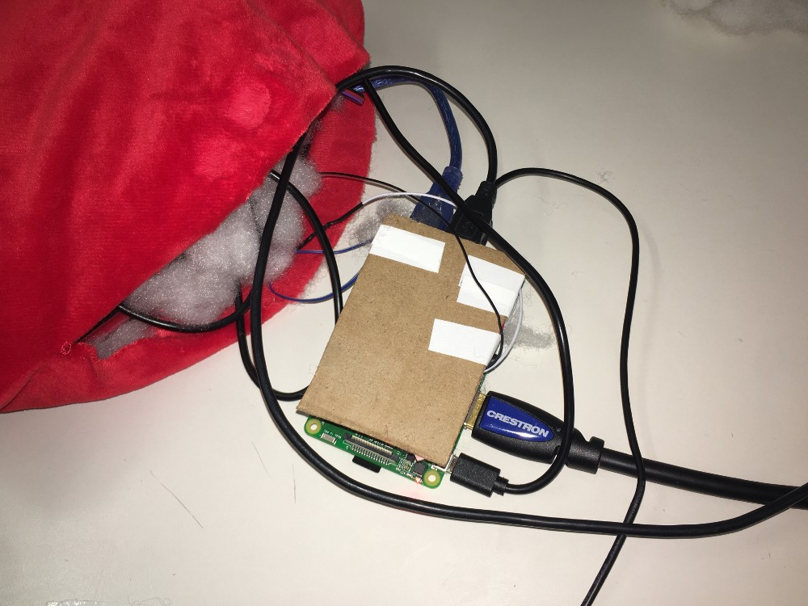

ShareHeartBeat
"Share and feel your loved one’s heartbeat by hugging a plush heart."
This was a group project we made for a Design/Robotics class I took at Brown. ShareHeartBeat was conceptualised and protoyped before the COVID-19 pandemic, targetting users in long distance romantic relationships. However, now this project has taken on a new meaning and importance for the many loved ones who have been separated by lockdowns.
- Type: Designing Humanity Centered Robots Project
- Timeline: October-December 2019
Designing the heartbeat to feel real
For the user to feel the closest intimacy from afar, it was essential that the heartbeat simulation was accurate. Initially, we struggled to get the heartbeat to feel real with basic vibration motors. If anything, our vibrations felt like receiving text messages. So, we decided to purchase a haptic motor controller (Adafruit DRV 2605L) that already has built-in vibration patterns. We found that using a combination of two different vibrations in succession (strong beat followed by a short beat) made the vibrations truly feel like a heartbeat.
Connecting the heartrate sensor
We had difficulty getting our analog-to-digital converter (ADC) to work directly with the RaspberryPi. So we decided to connect the sensor to our Arduino, which we then plugged into our Raspberry Pi to retrieve the heartrate.
Getting the two Pis to communicate
The next big challenge was figuring out how to get the two Pis to communicate. Each Pi had to send a heartbeat and receive a heartbeat in realtime. We used sockets to get the Pis to communicate over wifi. One Pi was the server, and the other was the client. Ideally we would use a cloud server so the Pillows need not be connected to the same wifi to work. This is more reasonable for our long distance use case. Given this was a proof of concept, web sockets were great for the prototype. Future iterations will tackle long distance communication.
Finalizing the form factor
Ideally, we wanted to use the iconic IKEA heart plushie with hands, because then we could place the pulse sensor on the hands of the heart. However, we were unable to order the larger-sized hearts online to the US, so we ordered tiny ones we found on Amazon.
We decided to scrap the tiny palm-sized version of the IKEA heart plushie and proceeded to stick with large plush hearts that could be hugged fully. We brainstormed where to place the pulse sensor. In order to test the best location, we asked several people to hug the heart plushie and realized that a lot of hands were on either end of the heart. So we decided to place the pulse sensor on the side of the heart, where the right index finger would touch when the heart is hugged.

Final Working Product
By using a powerbank as our power source, we were able to go wireless and place all the parts inside the plush heart. It was important to protect our wires, so we created a simple shield.
Final Thoughts
I learned so much from this project. It was my first time working with hardware and explroing communication between two computers using websockets and servers. Apart from the new technical challenge, disguising hardware in a cozy heart shaped pillow is an interesting design challenge. In the end, the proof of concept turned out great and was well received by my classmates who tested out the product.